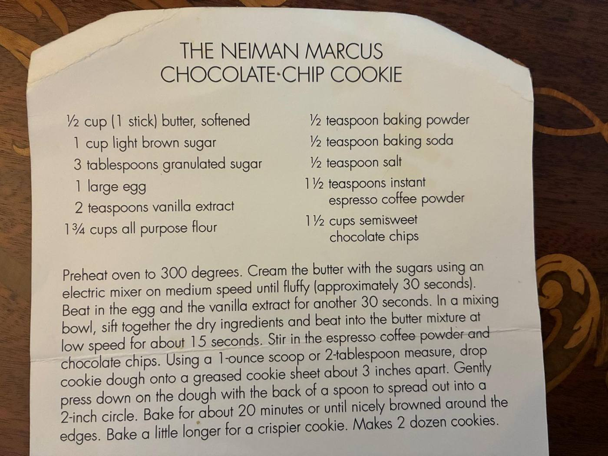

Desserts
Neiman Marcus Chocolate Chip Cookies
From Neiman Marcus
Oven300°F
BakeAbout 20 min
Makes24 cookies

Mom's original card · tap to enlarge
Ingredients
Method tap a step to mark it done
- Preheat the oven to 300°F.
- Cream the butter and both sugars with an electric mixer on medium speed until fluffy, about 30 seconds.
- Beat in the egg and vanilla for another 30 seconds.
- Sift the flour, baking powder, baking soda and salt together, then beat into the butter mixture on low speed for about 15 seconds.
- Stir in the espresso powder and chocolate chips.
- Drop 2-tablespoon scoops (a 1-ounce scoop) onto a greased cookie sheet about 3 inches apart. Press each down with the back of a spoon into a 2-inch circle.
- Bake about 20 minutes, until nicely browned around the edges. Bake a little longer for a crispier cookie.